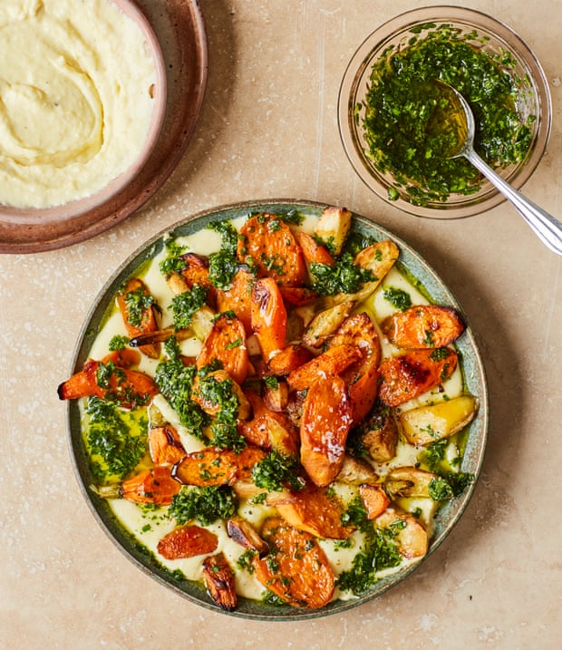

Aligot with roast winter vegetables and chermoula

I once read a description of aligot as “stick-to-your-ribs comfort food”, which really stuck with me for telling it like it is. This fondue-like mashed potato-and-cheese dish originates from the Midi-Pyrenees in France, and probably makes most sense after a long day outside in the mountains, but I’m sure a good stomp around the park will work just as well. Traditionally, it’s made with tomme fraiche, but for ease of sourcing I’ve used comté and mozzarella instead. Swap the root veg for roast cabbage or sprouts, if you like.
For the chermoula
For the roast vegetables
For the aligot
First make the chermoula. Put the garlic, chillies and oil in the bowl of a large food processor and blitz until almost smooth. Add the coriander and parsley leaves and the cumin and coriander seeds, then pulse four or five times, until almost finely chopped but still green. Decant into a small bowl, stir in the lemon juice and set aside.
Meanwhile, heat the oven to 240C (220C fan)/475F/gas 9. Put all the root vegetables in a medium bowl with two tablespoons of oil, a half-teaspoon of salt and a good grind of pepper, toss to coat then arrange in a single layer on a large oven tray lined with greaseproof paper. Roast for 20 to 25 minutes, until softened, blistered and charred in places.
While the veg is roasting, make the aligot. Put a litre of water and a tablespoon of salt in a medium saucepanand bring to a boil. Add the potatoes and garlic, cook for 15 minutes, until tender, then drain. Push the spuds and garlic through the finest setting of a potato ricer (if you don’t have a ricer, pass them through a mouli, or mash with a masher until very smooth). Return the mash to the hot pan, but off the heat, then stir vigorously with a wooden spoon until it comes together into a smooth ball. Put the pan on a low heat, pour in the cream, mustard, half a teaspoon of salt and a good grind of black pepper, and stir thoroughly until the mix thickens to the consistency of a runny mash. Vigorously beat in the grated cheese a third at a time, until it’s all melted in and the aligot mix is shiny and pulls away from the sides of the pan in smooth strands when lifted up with the spoon. Turn down the heat to very low and keep warm.
To assemble the dish, put a large ovenproof platter in the oven for five minutes, until warm but not burning hot. Remove from the oven, spoon three-quarters of the aligot over the platter and arrange the hot roast vegetables on top. Drizzle over half of the chermoula and the remaining tablespoon of oil, and serve hot with the remaining chermoula in a bowl and the remaining aligot for dipping on the side.